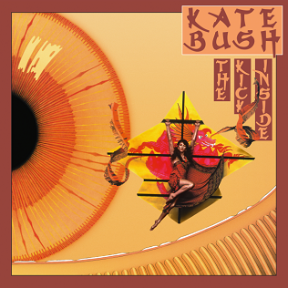
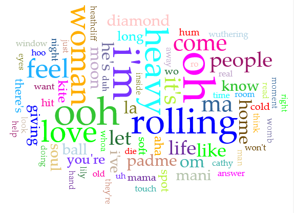
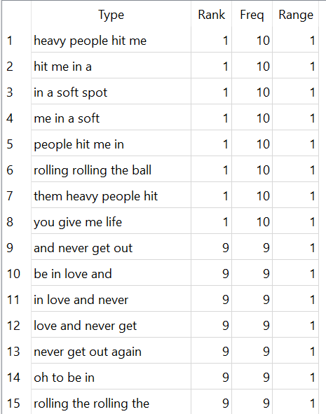
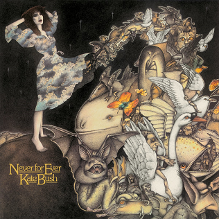
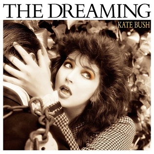
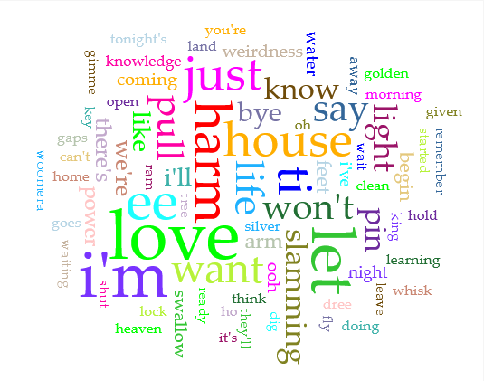
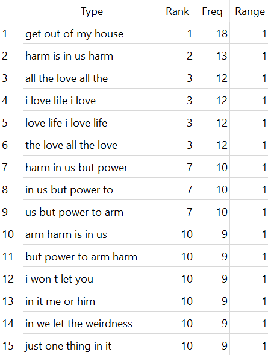
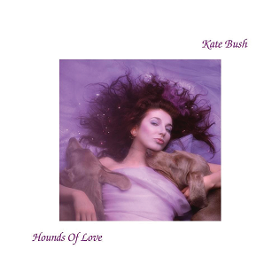
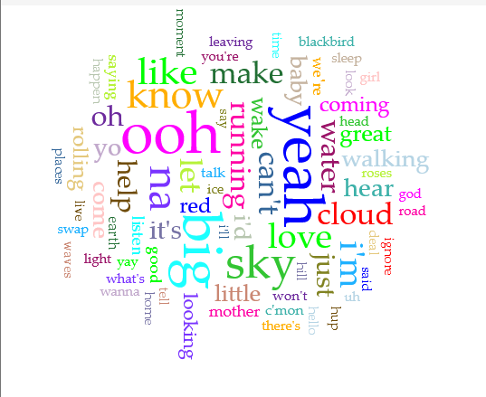
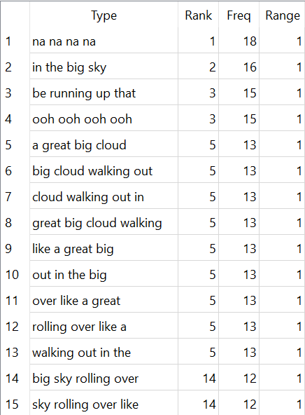

Hello!! I'm doing a corpus analysis on a few of Kate Bush's Albums. Specifically her debut, and the three most impactful ones in her career. I will be analyzing the difference in story, delivery, and overall phrasing, utilizing the programs Antconc and Voyant. I will touch on how her imagery, repetition, and delivery individually impact her albums.

"The Kick Inside"


The Kick Inside is Kate Bush's debut album. This album is often regarded as a very ornate debut, gaining attention because of her extremely high pitched vocals, coupled with intense piano-balladry. This album specifically focuses on themes of sensuality and vulnerability, portrayed in a first-person narrative perspective. "Oh" and "Ooh" in lyrics usually are placed to demonstrate a feeling of longing, she uses these words 90 times in this album alone. She mentions "heavy people", not actaully referring to their weight, but the weight they bear on her. "Them heavy people hit me in a soft spot", talking about how the people seemingly often "hit" her, metaphorically referring to the way that people's actions get the best of her emotions frequently, too frequently.

"Never For Ever"
Never For Ever as an album focuses a lot on heavier topics, specifically about death, political/social climate, and the actual climate. It tackles many emotional subjects while the songs stay somewhat upbeat. As shown in the Voyant image, a lot of the frequently repeated words can be directly connected to a lot more sensitive topics. Words like "Syphyllis", "dreamers", "breathing", "scream", "die", "shot" and even "whisper" tie to things like bodily decay, psychological fragility, and other forms of paranoia. This album came out during an intense period of the Cold War, many people were anxious about how it may escalate, and this album attempted to personify those feelings. The song "Breathing" specifically talks about the affects of nuclear warfare on the planet, even playing an audio of someone (perhaps a solider or scientist) describing the visuals of an atomic bomb landing.

"The Dreaming"


The Dreaming as an album is a lot like a movie, but in that every song on the album is a reference to a specific movie, this occurs in her other albums as well. It explores interal and external conflicts/violence, be it about Australian colonization ("The Dreaming"), or something more personal, like relationships ("Get Out of My House"). This album follows a more jarring path sonically in comparison to her other albums. The word "weirdness" is repeated a lot, seemingly ironic considering that nothing on this album is mainstream, the weirdness is seemingly the entire point. It's a bit of a lighthearted approach to more serious topics, in comparison to Never For Ever, intense words like "harm" and "slamming" are repeated 27 and 14 times respectively. While "love" is 48, her music always comes back to love it seems. Additionally, This one is my favorite. :)

"Hounds of Love"


Hounds of Love as an album is 'split in two'. It has a pop side and a more conceptual side, both following different storys that find their own ways to intertwine with each other, this album is often called her masterpiece, topping charts in 1985, and in 2022 because of Stranger Things. This album focuses on self reflection and the overall greater aspects of life, the perspectives of different people and the many different lives we all live. She references the clouds and the sky in almost every song, and she repeats those words/phrases frequently. Saying "big", "sky", and "cloud" 41, 28, and 17 times respectively. This album differs from The Dreaming specifically because the songs discuss the freedom and vastness (and loneliness) of earth, rather than being about confinment and self criticism, This is reinforced by the N-Grams, showing the repition of these phrases. Themes of love are also less explicit/present here, it's more of an abstract idea on this album.
Conclusion
Well, I think it's safe to say that Kate Bush is a pop icon. She very obviously uses the same sort've "catchy" repetition techinques that many singers today use. But Kate Bush does it in a way to sell a story or underlying message and the N-Grams really highlight each album's direction etc. Accross all four of the albums chosen here, repetion remains to be her biggest tool, whether its single words, full phrases, or just some nonsensical syllable. All four of them have such different sounds and themes, but yet still carry such intense emotions and express many different ideas, her use of figurative language is just amazing.
For example, "love" as a topic, It's discussed on all four albums, but it's portrayed differently on each. On The Kick Inside, it's sensual and close, very brain and heart. On Never For Ever, it's something more fragile, threatened by the fear of death or abandonment. On The Dreaming, it feels almost frantic, I mean it's repeated 48 times!! It's as if she's desperately holding onto it. And finally, on Hounds Of Love, it is very abstract, much less of a present word and more of a distant feeling. Kate Bush's music has had a profound impact on my life, and while I only picked four of her albums. I encourage you to listen to all of her discography.